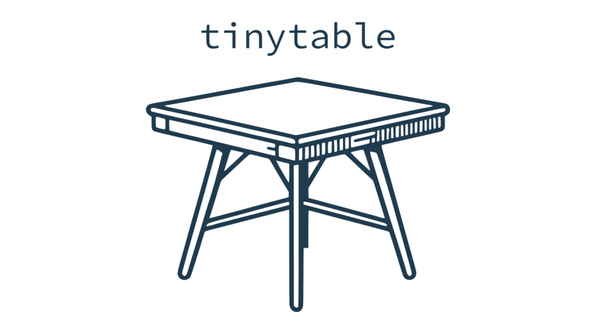

What?
tinytable is a small but powerful R package to draw beautiful tables in a variety of formats: HTML, LaTeX, Word[1], PDF, PNG, Markdown, and Typst. The user interface is minimalist and easy to learn, while giving users access to powerful frameworks to create endlessly customizable tables.
Why?
There are already many excellent table-drawing packages in the R ecosystem. Why release a new one? As the maintainer of modelsummary, I needed a table-drawing package which was:
- Simple: Streamlined, consistent, and uncluttered user interface, with few functions to learn.
- Flexible: Expressive frameworks to customize tables in HTML and LaTeX formats.[2]
- Zero-dependency: Avoid importing any other
Rpackage.[3] - Concise: Draw beautiful tables without typing a lot of code.
- Safe: User inputs are checked thoroughly, and informative errors are returned early.
- Maintainable: A small code base which does not rely on too many complex regular expressions.
- Readable: HTML and LaTeX code should be human-readable and editable.
- Free: This package will always be free. Tiny tables for a tiny price!
To achieve these goals, the design philosophy of tinytable rests on three pillars:
Data is separate from style. The code that this package creates keeps the content of a table separate from the style sheet that applies to its cells. This is in contrast to other
Rpackages that modify the actual text in each cell to style it. Keeping data and style separate allowstinytableto create human-readable files which are easy to edit, debug, and extend. It also enables developers to keep a simpler code base, with minimal use of messy regular expressions.Flexibility. Users’ needs are extremely varied, and a table-drawing package must be flexible enough to accomodate different ideas. To achieve this,
tinytablebuilds on battle-tested and versatile frameworks likeBootstrapfor HTML andtabularrayfor LaTeX.Lightweight. Some of the most popular table-drawing packages in the
Recosystem are very heavy: A singlelibrary()call can sometimes load upwards of 65Rpackages. In contrast,tinytableimports zero 3rd partyRpackage by default.
Installation
tinytable is a relatively new package with rapid development. If you want to benefit from the latest features—showcased on the package website—you should install from R-Universe:
install.packages("tinytable")Alternatively, you can install it from CRAN:
install.packages("tinytable")Restart R completely for the installation to take effect.
First steps
The best feature of tinytable is its simplicity. To draw a table, simply call the tt() function with your data frame as the first argument:
library(tinytable)
x <- mtcars[1:5, 1:5]
tt(x)

More complex tables can be created by calling arguments and chaining functions together. In the next example, we add a caption, footnote, colors, styles, and spanning column headers:
cap <- "A simple \\texttt{tinytable} example."
not <- "Nullam odio est, ullamcorper scelerisque lectus a, eleifend luctus nisl. Etiam ullamcorper, nibh vel interdum auctor, odio nulla mollis tortor, vel fringilla ante quam quis est."
tt(x,
caption = cap,
notes = not,
width = .5) |>
style_tt(
i = 1:3,
j = 1:2,
background = "teal",
color = "white",
bold = TRUE) |>
group_tt(
j = list("Halloumi" = 1:2, "Tofu" = 4:5))

Tutorial
The tinytable 0.6.1.7 tutorial will take you much further. It is available in two formats:
- Tutorial (PDF)
- Tutorial (HTML):
[1] Styling options in Word are somewhat limited. See the FAQ page and the style_tt() documentation for details.
[2] Other formats like Markdown and Typst are also available, but less flexible.
[3] Some extra packages can be imported to access specific functionality, such as integration with Quarto, inserting ggplot2 objects as inline plots, and saving tables to PNG images or PDF documents.